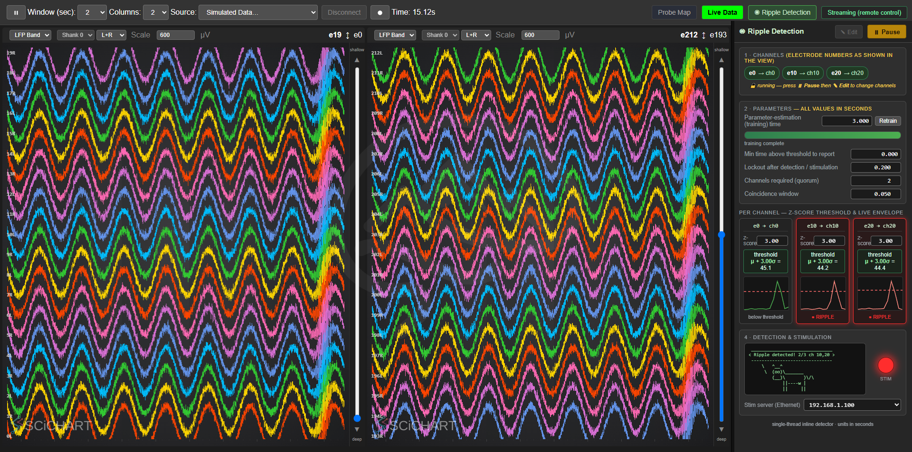
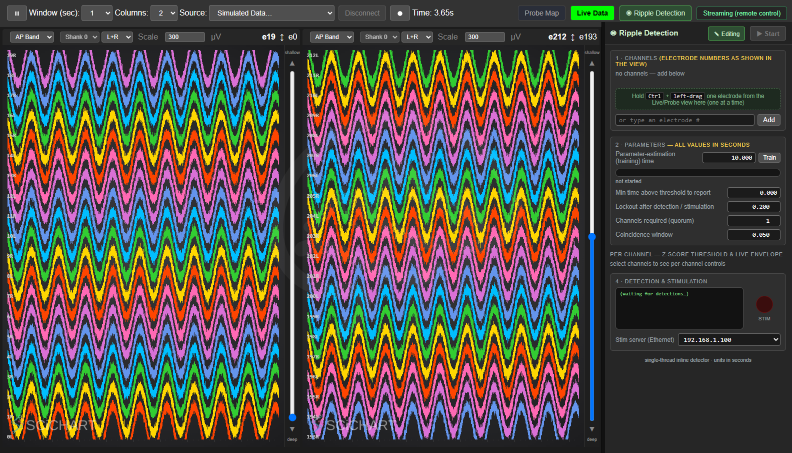
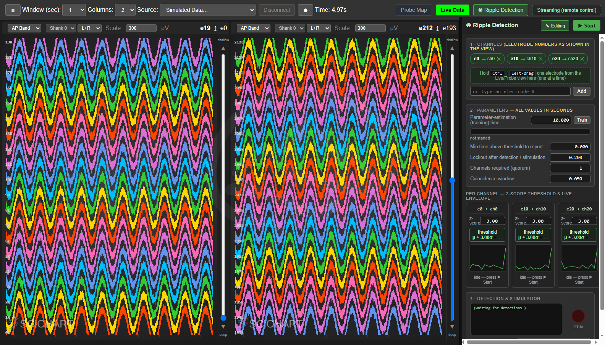
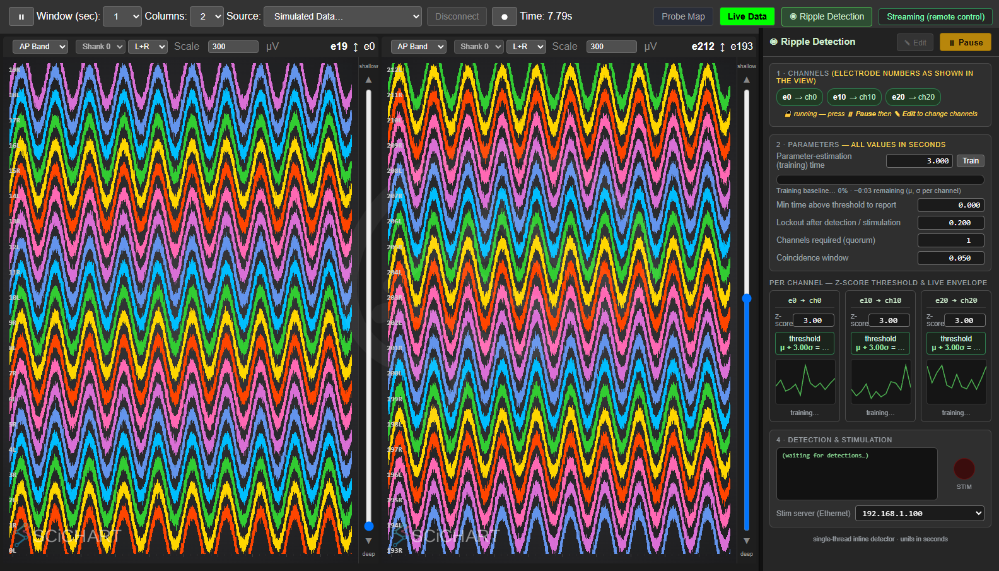
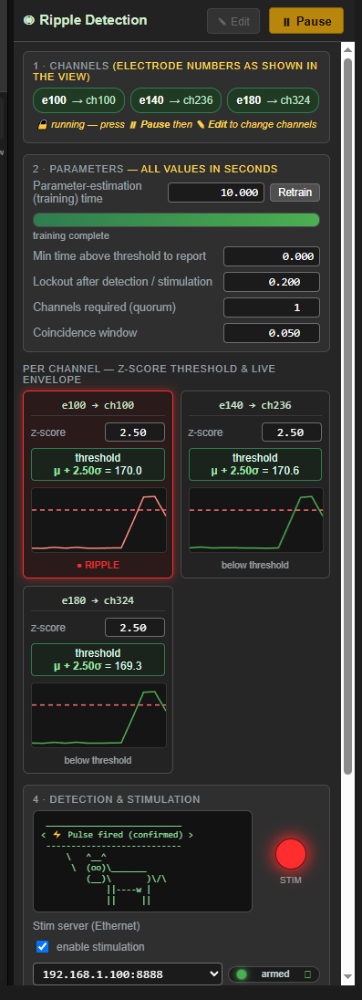
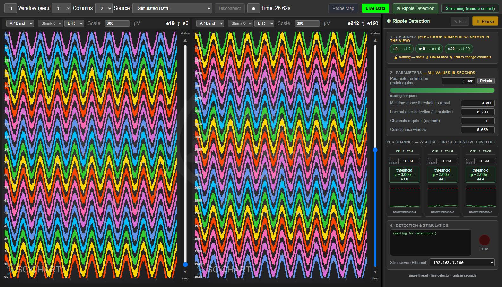
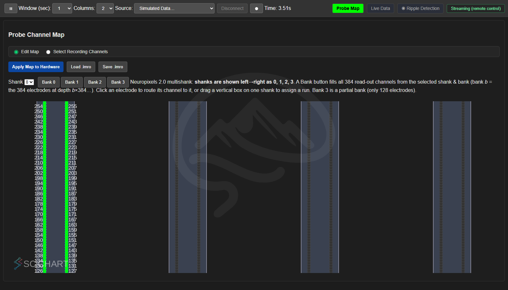
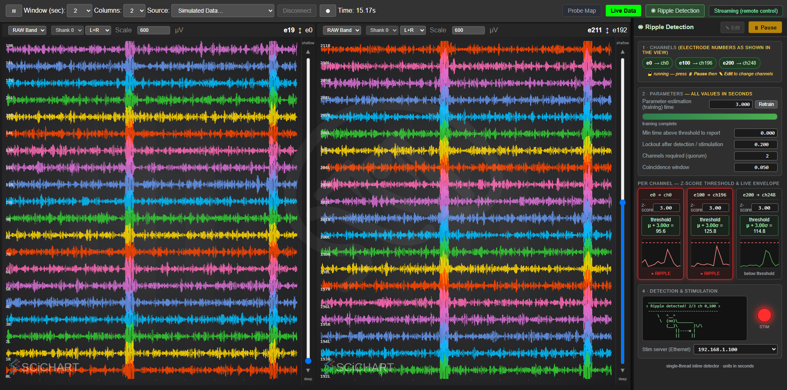

SpikesPeak — Ripple Detection Module (User Guide)#
The Ripple Detection module watches the LFP band for hippocampal sharp-wave ripples (SWRs) and, when enough channels cross threshold together within a short window, fires a stimulation trigger (closed-loop). It lives in a right-side dock in the browser UI and coexists with the Probe Map / Live Data views (a toolbar tab toggles it). Everything is GUI-driven — you pick the channels, set the parameters, and start/stop it live; nothing is baked into a config file.
New here? Read
GUI-Guide.mdfirst for launching SpikesPeak and picking a source, andSimulatedData.mdfor every hardware-free source you can drive this with. This guide covers operating the ripple module. Screenshots below are from the simulated sources. Stimulation server (Raspberry Pi) setup: see ../raspberrypi_pulsegenerator/README.md.For developers: the detection algorithm + per-probe data path is in
../developer_docs/RippleDetection.md; the GUI ↔ backend WS command/event contract is in../developer_docs/RippleGui.md. This guide does not duplicate them — it is the operation manual.
The whole module at a glance (NP1 sim, three channels detecting a ripple):

On the right dock, top→bottom: ① Channels, ② Parameters + Train/Retrain + progress bar, ③ per-channel
columns (z-score, μ+zσ threshold, rolling envelope), ④ Detection & stimulation (cowsay + red STIM LED + stim
IP). The main view (left) is the Live Data waveforms on the LFP band (where NP1 ripples live — see the tip in
§5); the ripple burst is the bright vertical band. This shot runs with quorum = 2: two channels (e10, e20) are
in ● RIPPLE together, so the cowsay reports 2/3 ch 10,20 and the stim trigger fires.
1. Open the module and pick a source#
- In the toolbar's second row — beside
Probe Map | Live Data, and the▣ OneBox/▤ NI-DAQdevice tabs when those sources are connected — click ◉ Ripple Detection. The dock slides in on the right and the main view shrinks to fit (no overlap, even columns). Drag the dock's left grip to resize it. - Pick a source that produces an LFP band the detector can read (via the Source dropdown → Simulated Data…, or a real-probe profile). The best sources for learning the module:
| Source (in the Simulated Data picker) | What it is |
|---|---|
| Neuropixels 1.0 — Ripple Detection (GUI) | NP1 sim, injected ripples, no channels pre-selected |
| Neuropixels 2.0 Multishank — Ripple Detection (GUI) | NP2 sim, injected ripples, no channels |
| Simulated Neuropixels 2.0 (play file) | Replays an HDF5 file through all channels (§6) |
| real NPX 1.0 / 2.0 with NI-DAQ | attaches to the live probe LFP |
(See SimulatedData.md for the full source list and the ripple-injection knobs.)
The module always starts paused, with zero channels — it will not train or detect until you add channels and press Start:

Note the header shows ▶ Start (disabled, greyed — no channels yet) and the training bar reads "not started".
2. Select detection channels#
The panel shows electrode numbers (as labelled in the Live/Probe view). Add one electrode at a time:
- Drag from a view: left-drag an electrode — a label in Live Data, or an electrode on the Probe Map — into the dock. Hold Ctrl, or — because the dock is open — just drag (no Ctrl needed).
- Type it: enter an electrode number in the box under the chips and click Add.
Each channel becomes a chip (e50 → ch98 ✕, showing the electrode→read-out-channel mapping) and gets its own
column below. Remove one with its ✕. Channels are only editable while paused + Edit (§4).

Here three electrodes 0, 10, 20 were added. Each column status reads "idle — press ▶ Start" and the
Train/Retrain button reads "Train" (nothing has trained yet). The Start button is now enabled.
Electrode vs channel: on NP2 the mapping is not identity — e.g.
e100 → ch196,e200 → ch248(the probe's block-permutation wiring). The chip shows you exactly which read-out channel your electrode lands on.
3. Parameters (section ②)#
All times are in seconds. Set these before Start (or pause + Edit to change them later):
| Control | What it does | Default |
|---|---|---|
| Parameter-estimation (training) time | Seconds of LFP used to estimate each channel's baseline mean/σ. Longer = steadier threshold, slower to arm. | 1200 s |
| Train / Retrain button | Runs (or re-runs) baseline estimation. Reads Train until every channel is trained, then Retrain. Enabled only while running. | — |
| Min time above threshold to report | A channel must stay above threshold this long before it counts (rejects 1-sample blips). 0 = react instantly. |
0.000 s |
| Lockout after detection / stimulation | Refractory — after a detection, channels can't re-fire for this long. | 0.200 s |
| Channels required (quorum) | How many selected channels must cross threshold together (within the coincidence window) for a true detection + stim. Must be ≤ channels selected. Default 1 = any single channel; the screenshots here use 2 to show the coincidence logic. | 1 |
| Coincidence window | Time window within which the quorum's crossings must all fall. | 0.010 s |
| Per-channel z-score (section ③) | Each column's own z; threshold = μ + z·σ. Editable any time, even while running — live sensitivity tuning; the threshold updates instantly. | 3.00 |
Tip — for a quick sim test, set the training time to 3 s so the module arms in a few seconds instead of 20 minutes. (There is also a fixed ~6 s amplifier-settle gate before training starts, so first detection is ~9 s after Start with a 3 s training time.)
4. Run it: Start / Pause / Edit#
The dock header has two buttons:
- ▶ Start — begins the module. The first Start trains the baseline (progress bar fills), then detects. A Start after a Pause just resumes with the existing baselines (no retrain). Disabled until ≥1 channel.
- ⏸ Pause — stops detection + stimulation. Live envelopes keep streaming so you still see data; baselines are kept.
- ✎ Edit — enabled only while paused. Unlocks the configuration (channels + parameters). While running, the config is locked (no dragging channels or editing params — except the per-channel z-score, which stays live). Press Start to re-lock.
While training, each column shows "training…" and the progress bar fills:

Adding a channel to an already-trained set: pause → Edit → drag the new electrode in → Start. Existing channels keep their baselines; only the new channel trains ("train-only-new").
5. Reading the display (sections ③ + ④)#
⚡ To SEE ripples in the Live Data view, pick the right band. Each column has a band dropdown (top-left of the column). Ripples live in the LFP band on NP1 (the AP band is high-passed and carries no ripples) and in the RAW band on NP2 / play-file. In the LFP/RAW band the ripple bursts show as periodic denser vertical bands across channels — but the clearest view of a ripple is the per-channel envelope in the dock, which spikes above the dashed threshold on every detection. (Tip: a ~2 s Window and a ~600 µV Scale separate the traces nicely and make each ripple burst stand out as a bright vertical band — that's what the screenshots below use.)
Per-channel column (section ③): - the μ + z·σ = value threshold, - a rolling envelope plot — the last 500 ms of the ripple-band envelope, with the threshold drawn as a dashed red line, - a status line: - idle — press ▶ Start — added but not running, - training… — running, estimating baseline, - below threshold — armed and watching, - ● RIPPLE — the envelope crossed; the column flashes red for the lockout.
Detection & stimulation (section ④):
- a cowsay banner prints each detection: Ripple detected! k/N ch <list> (k of N channels reported, and
which electrodes),
- a red STIM LED lights for the lockout on a true detection,
- a stim-server IP selector chooses where the trigger is sent.
A true detection fires when quorum channels cross within the coincidence window — then the stim
trigger goes out. The cowsay shows k/N and which channels reported. Below, the NP2 sim with quorum = 2:
channels e50 and e100 are both in ● RIPPLE while e0 stays below threshold, so the cowsay reports
2/3 ch 50,100 and the stim fires (only channels that cross together count):

Live threshold tuning#
You can change any column's z-score while the module is running — the threshold recomputes immediately (higher z ⇒ higher threshold ⇒ fewer detections). Below, e0's z was raised from 3 to 8 mid-run and its threshold jumped from ~45 to ~69:

6. HDF5 "play file" — replay a recording through all channels#
Pick Simulated Data… → "Simulated Neuropixels 2.0 (play file)". The picker gives you a path line edit:
- Type or paste a full path to an
.h5file and click ▶ Play file — it plays that file directly. - Or leave it blank and click 📂 Browse… to open your machine's native file dialog.
The last path is remembered. A missing/wrong-format file streams silence + logs a warning (no crash) — just re-select and pick a valid one.
The play-file source renders the Probe Map like a real probe, and you select detection channels + run exactly as above:


File format#
The .h5 must contain:
- a dataset data, int16, shape [nSamples × nChannels] (or 1-D [nSamples] = one trace broadcast to
all channels), sample-major;
- an attribute sampling_rate (int32, Hz — expected 30000);
- optionally num_channels (int32).
Generate a synthetic one with scripts/gen_synthetic_ripples.py — see SimulatedData.md
and ../developer_docs/SyntheticSources.md. Other formats (e.g. the
recorder's .bin + .json) are a planned future feature.
Note: the play-file live view can look sparse compared to the sine-wave sims — the HDF5 here is ripple-band-only, low-amplitude data with ~1 s-spaced bursts, not a full-spectrum neural signal. Detection is unaffected (the envelopes + cowsay show the activity).
7. A complete worked example (NP1 sim)#
- Source → Simulated Data… → Neuropixels 1.0 — Ripple Detection (GUI). Wait for "device ready".
- Press ▶ Play (toolbar). Click ◉ Ripple Detection to open the dock.
- Switch the main view to Live Data. In the dock, add electrodes
0, 10, 20(drag them from the view, or type + Add). - Set Parameter-estimation time = 3 (for a quick test). Press ▶ Start.
- Watch the progress bar fill ("training…"). After ~9 s the columns arm ("below threshold"), thresholds
appear (μ + 3σ ≈ 45), and detections start firing — the cowsay prints
Ripple detected! 1/3 ch 0, the STIM LED blinks, and the crossing column flashes ● RIPPLE. - Try raising a column's z-score to 8 → its threshold jumps and it stops firing. Lower it back to see it fire again.
- Pause, click Edit, add electrode
30, press Start — onlye30re-trains; the others keep detecting.
(This is exactly the verified test run behind the screenshots above: 6 detections, thresholds 45.1/44.2/44.4, Train→Retrain after training, live-z 45→69.)
8. Tips & troubleshooting#
- Nothing detects? Confirm the module is running (button shows ⏸ Pause), training reached 100% ("training complete"), and your z-score isn't so high that ripples don't cross it. Detection needs a warm-up (~6 s settle gate + your training time).
- The Start button is greyed out → you have no channels selected. Add at least one.
- "Quorum" never met? Lower Channels required, widen the coincidence window, or add more channels.
- Too many false detections? Raise the per-channel z-score, increase Min time above threshold, or raise the quorum.
- Play-file picked the wrong file / didn't open? Re-select the play-file source to reopen the picker.
- Module shows "enabled" on a fresh source? It shouldn't — it starts paused with 0 channels. If a config sets
auto_start: true, it will run on Play (the sim GUI configs set it false). - Real hardware: the detector reads the native LFP directly (NP1) or a derived LFP (NP2) for lowest closed-loop
latency. Set
debug_files: falsein the profile for hardware runs (per-sample debug dumps add I/O latency).